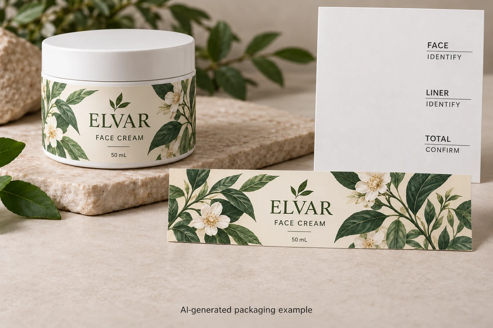

Ask what the number belongs to
Start with the construction reference, including its revision. Then ask whether each stated thickness describes the face stock, an adhesive layer, the release liner, a protective film or the complete supplied combination. A trade name alone may leave that scope unclear.
Avery Dennison's 77844 product data sheet illustrates why those headings matter: it lists component calipers separately from approximate total construction caliper and includes a separate basis-weight field. That document concerns an overlaminating product, not a recommendation for your cosmetic bottle.
Use its organisation as a reading example. Obtain the corresponding current fields for the construction actually quoted. Do not copy the example's values, tolerances or product claims into a different job.
Keep mass per area separate from thickness
Basis weight describes mass over an area. Caliper describes thickness. A value in grams per square metre and a value in microns therefore cannot be ranked as though they were two versions of the same measurement.
Unit conversion helps only when the property is already the same. For example, 0.050 millimetres equals 50 microns. That is arithmetic, not a target film thickness. It does not convert a paper's basis weight into caliper or establish how stiff, opaque or durable a finished label will be.
Keep the original entry in the comparison sheet, then add a clearly named normalised unit if needed. This preserves what the supplier actually stated and makes a mistaken conversion easier to find. If the property or layer remains unknown, leave the comparison pending.
Distinguish supplied thickness from what stays on the bottle
The backing supports the label before application. It normally leaves the decorative label during dispensing, so a thickness that includes the liner is not simply the thickness of the material remaining on the bottle.
A protective film may add another component. Ask whether the quoted figure includes the proposed finish and whether the document describes raw stock or the intended printed and finished construction. Avoid constructing a final total yourself from incomplete component figures and treating the result as the supplier's approved value.
This distinction also affects communication with the filling line. The operator may need information about the complete supplied web. The brand may be asking about the applied edge or feel. Clarify which question each person is trying to settle before forwarding one thickness figure to everyone.
Our co-packer roll guide covers the wider receiving specification. A face-stock caliper cannot replace its roll-build and operator-confirmation fields.
Make nominal, typical and acceptance values visible
A published technical value needs its stated status. Record whether it is nominal, approximate, typical or part of an agreed specification, using the supplier's wording. Ask what applies to the delivered construction rather than silently turning a reference figure into a contractual acceptance limit.
If dimensional variation matters to the application, have the technical parties agree the measurement and acceptable conditions. This article sets no tolerance, instrument setting or sampling rule. An unexplained difference between two sheets is a question to resolve, not automatic evidence that one supplier has delivered a defect.
Also check document identity. A data sheet for a similarly named stock, an earlier adhesive combination or a different regional product can create a comparison that looks precise while referring to the wrong material.

Use a comparison sheet with a clear stop condition
Bring the actual offers and supplier documents to the review. Create one row per stated property, rather than one large thickness box for the entire job.
| Field | Entry needed | What to do with a gap |
|---|---|---|
| Construction | Supplier code and current revision | Confirm the quoted combination |
| Layer | Face, adhesive, liner, finish or stated total | Ask which material is included |
| Property | Caliper or basis weight | Do not compare unlike properties |
| Value and unit | Original entry and any labelled conversion | Check conversion before ranking |
| Value status | Supplier's nominal, typical or agreed wording | Request the applicable specification |
| Finished state | Raw stock or finished construction | Confirm relevant added layers |
| Decision owner | Brand, converter or receiving operator | Route the unresolved question |
First reconcile identity and scope. Next align units for the same property. Only then discuss whether the difference affects the intended job. If one offer still gives face thickness and the other only a total, the sheet has found a missing answer; it has not selected a winner.
Let the actual requirement choose the next check
Consider a hypothetical brand choosing a dry presentation label mainly for its accepted appearance. It may need the construction identified without making thickness the leading buying criterion. Paying for a larger number has no demonstrated benefit by itself.
Another project supplies rolls to a co-packer whose requirements depend on the complete web construction. That buyer needs the appropriate supplier data and operator review. A visually similar face stock does not settle what the line receives.
Neither case makes thickness irrelevant. They show why its meaning should follow the task. The material guide addresses the broader stock choice, while the matte-finish comparison explains another construction decision.
For custom cosmetic labels, provide the container, dimensions, artwork and quantity per design. Add the two specification entries that cannot yet be compared and identify whether your concern is applied appearance or supplied roll construction.
Use the inquiry form to prepare a message, then send the data sheets through email or WhatsApp. The form does not upload attachments. Ask for the missing layer and property before asking which number is better.